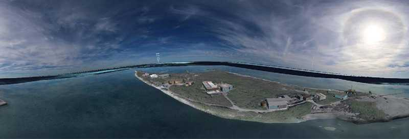

Beacon Virtua
Andrew Woods1, Paul Bourke2, Nick Oliver1
Virtual reality video contribution to IEEE VR 2018:
the 25th IEEE Conference on Virtual Reality and 3D User Interfaces
March 18-22, 2018, Reutlingen, Germany
1. Curtin University
2. The University of Western Australia
|

YouTube version
Abstract PDF:
Beacon Virtua (pdf)
In Beacon Virtua you can explore the legacy of the shipwrecked VOC ship Batavia by visiting a simulation of Beacon Island. Beacon Virtua will take you on a tour of the island including its jetties, fishing shacks and several grave sites of Batavia voyagers who were buried on the island after the ship was wrecked and following the uprising.
The graves have been reconstructed through a technique called photogrammetric 3D reconstruction, a process which uses multiple photographs of an object to build an accurate and detailed 3D model of it. Beacon Virtua presents the island as it was in 2013, using audio and photography captured during multiple expeditions to the island to preserve this period in its history.
In 2013 there were around 15 shacks located across Beacon Island, originally used by the fishing community. These shacks have been recreated as 3D models, which can be explored inside and out. Around the island are photographic panorama bubbles offering 360° views of the island. These bubbles have been captured using a special panoramic photography process - stepping inside a bubble allows you to see the island from that point exactly as it was in 2013.
|